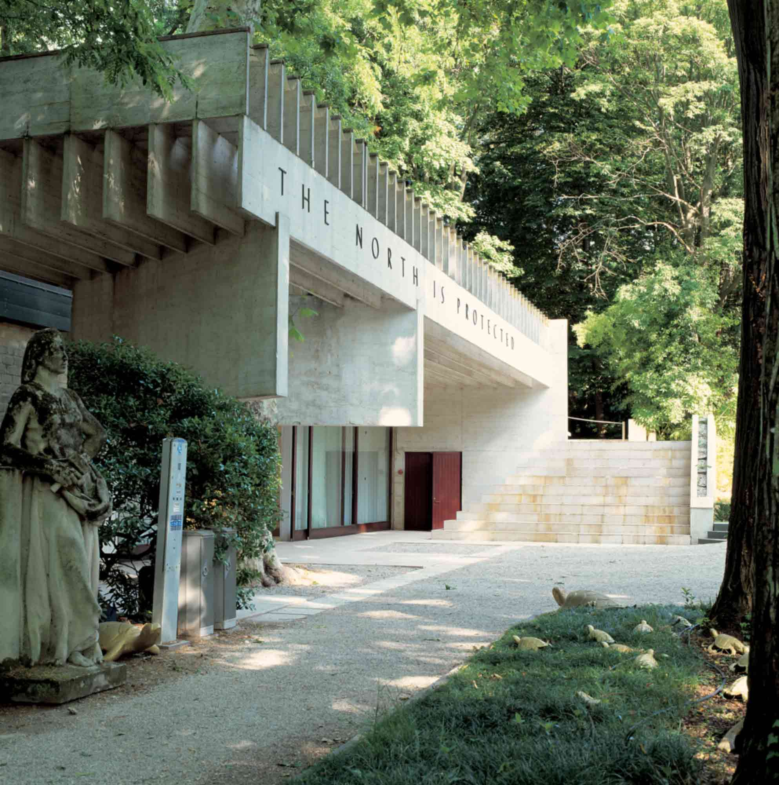
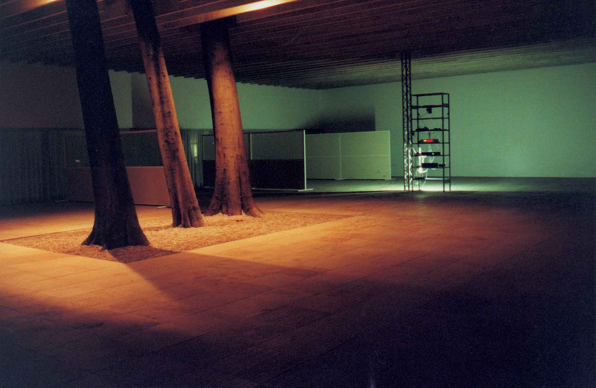
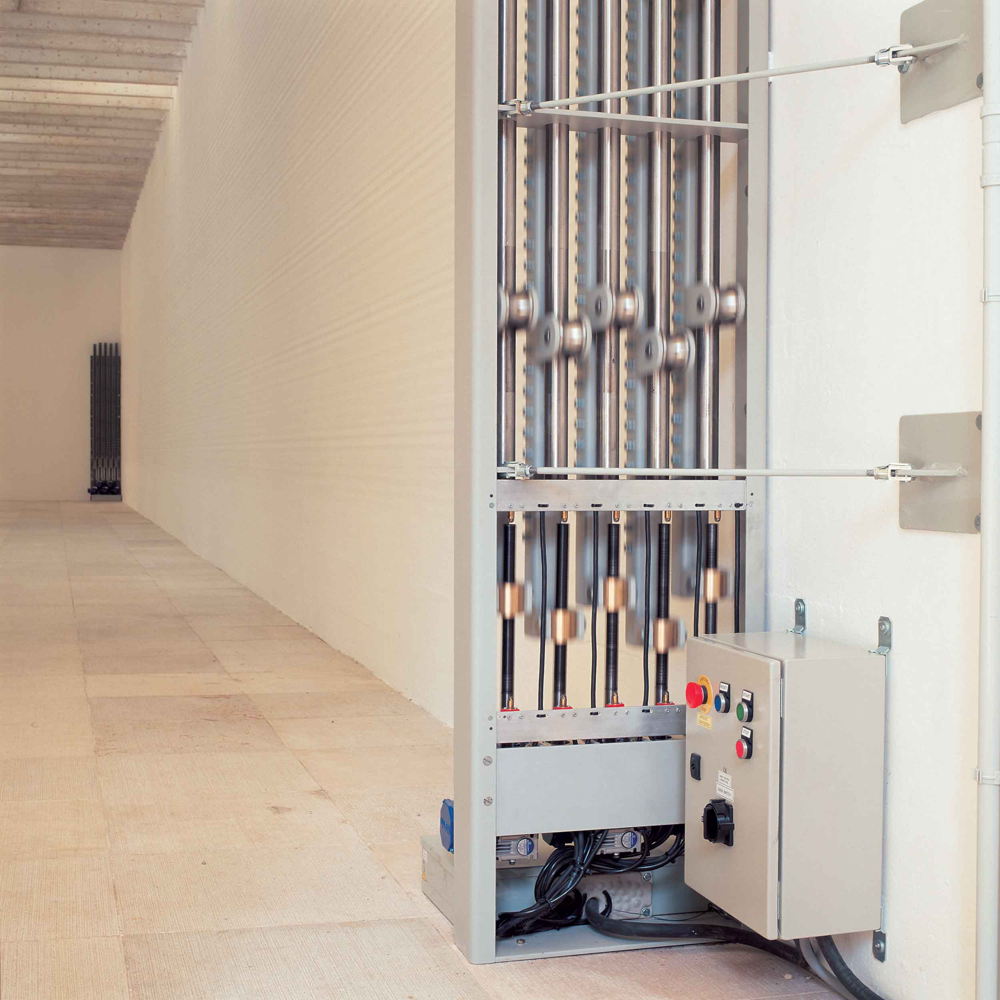

The North Is Protected, 49th Venice Biennale, Venice
2001
Curated by Grönlund-Nisunen and realized in collaboration with Leif Elggren, Carl Michael von
Hausswolff and Anders Tomren
The starting point for the exhibition was the exhibition space itself, the modernist pavilion building from
1962, designed by Norwegian architect Sverre Fehn. We did not want to construct the exhibition around some
formal concept, but wanted the exhibition space and the setting it provided to naturally set the direction for
the work of the working group and for the carrying out of the project. The exhibition is the outcome of six
months' collaboration between five artists. Instead of a traditional joint exhibition, we can talk rather of a
collectively made installation.

The Nordic Pavilion is a work, an exhibition and an exhibition space. The exhibition deals with the visible
and the invisible, and with the shifting boundary between them. The atmosphere of this unassuming exhibition
that blends into the pavilion architecture is formed out of subtle changes in spare visual elements and
sounds. The working group wants to stress the collective nature of the project by not naming or crediting the
individual works - the parts of the installation made by each artist/artist duo in their own country will
remain anonymous and will be interlinked into a single whole in the pavilion.
The especially constructed radio receiver/transmitter receives all radio frequencies simultaneously. The
outgoing signal, which is audible in the space and is also relayed via the transmitter on a single frequency,
contains all the information travelling on all radio wavelenghts. The space in the pavilion is divived by
glass partitions, their transparency changing gradually. Hundreds of short pieces of steel wire have been
suspended across the longest wall in the space. These move in relation to each other, gradually forming
shifting kinetic patterns.

